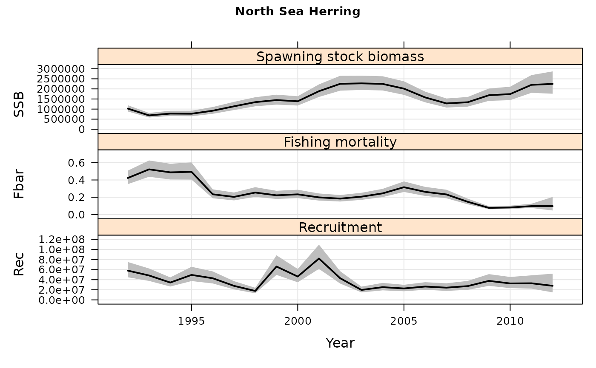
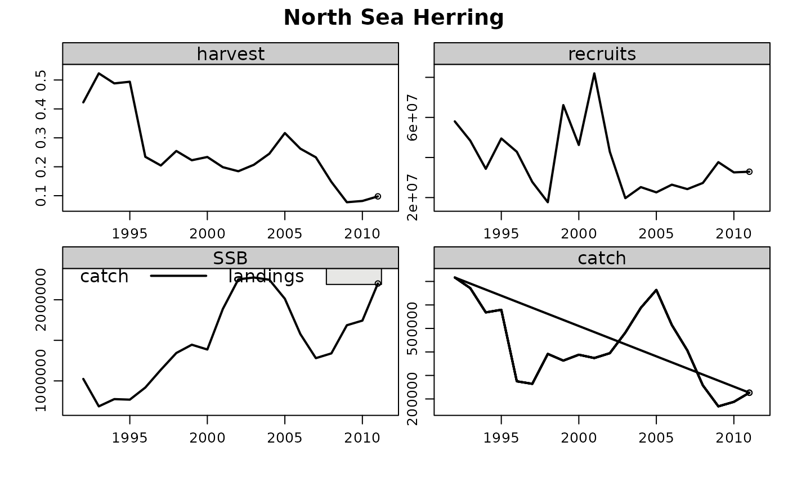

data.RdA set of FLR objects used to perform the 2012 North Sea Autumn Spawning Herring Stock Assessment
data(NSH) data(NSH.sam) data(HERAS.sams)
The data is split into three separate groups. The first of these, returned by data(NSH) contains objects relating to the North Sea herring stock
NSH - FLStock object for the North Sea herring stock, containing data relating to the stock e.g. catch numbers at age
NSH.tun - FLIndices object containing the results of surveys on the North Sea herring stock. The four surveys are
MLAI - The Multiplicative Larval Abundance Index. Used as a index of SSB
IBTS0 - A index of late-larval abundance performed in February. Used as an index of age 0 fish
IBTS-Q1 - The International Bottom Trawl Survey, performed in February. Used as an index of numbers-at-age for age 1-5 fish
HERAS - The Herring Acoustic survey, performed in July. Used as an index of numbers at age for age 1-9 fish.
In addition the results of an assessment of this stock performed using FLSAM, and the associated configuration file, are returned by data(NSH.sam)
NSH.sam - An FLSAM object containg the results of the assessment
NSH.ctrl - An FLSAM.control object containg the configuration used to perform the assessment
The third group is an example of an FLSAMs object and is called HERAS.sams. It contains four FLSAM objects resulting from various parameter configurations for the HERAS survey, grouping various age groups together. The four objects correspond to all age groups having independent catchability parameters ("all-free"), catchability parameters for ages 1-2, 3-4, and 5-8 ("three.lvls"), for ages 1-3, and 4-8 ("two.lvls") and one catchability parameter for all ages ("one.lvl").
Note that these are not the full North Sea herring assessment objects, but rather have been truncated to remove the data prior to 1992, so as to allow the model to converge quickly. The full assessment can be found in the Herring Working Group repository, "http://hawg.googlecode.com".
ICES. 2012. Report of the Herring Assessment Working Group for the Area South of 62 N (HAWG), 13 - 22 March 2012, Copenhagen, Denmark. ICES CM 2012/ACOM:06. 835 pp.
#Example of FLSAMs object data(HERAS.sams) #Likelihood ratio test to choose best combination lr.test(HERAS.sams)#> statistics #> models Comparison Neg. log likel # Parameters #> 1 North Sea Herring 1 vs. 2 309.174660403857 18 #> 2 North Sea Herring 2 2 vs. 3 168.861261408612 16 #> 3 North Sea Herring 3 3 vs. 4 169.571440412931 15 #> 4 North Sea Herring 4 172.990527772618 14 #> statistics #> models Likel difference Degrees of freedom P value #> 1 North Sea Herring -140.31 2 1 #> 2 North Sea Herring 2 0.71 1 0.2333 #> 3 North Sea Herring 3 3.42 1 0.0089 #> 4 North Sea Herring 4